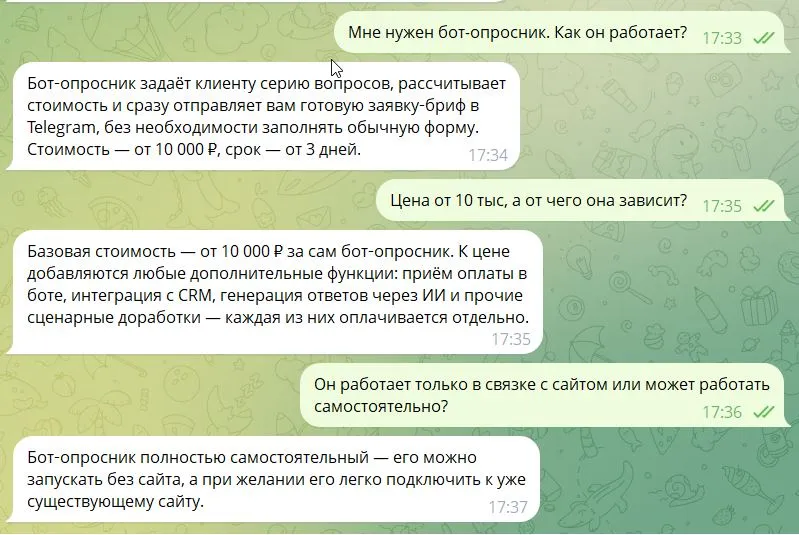

Короткий ответ
Бот-опросник для приёма заявок стоит от 10 000 ₽, срок разработки — от 3 дней. Это самый простой и дешёвый бот из линейки: он задаёт клиенту несколько вопросов по очереди, при необходимости считает примерную стоимость и отправляет вам готовую заявку с брифом прямо в Telegram.
В отличие от бота для записи клиентов, опросник не ведёт календарь и не бронирует конкретное время — он только собирает данные и передаёт заявку вам, а дальше вы сами связываетесь с клиентом.

Как выбрать: бот-опросник или что-то другое
Нужно ли фиксировать точное время. Если клиенту важно выбрать конкретный час и дату — нужен бот-администратор с календарём. Если время не критично и вы сами перезваниваете, чтобы согласовать детали, — опросника достаточно, и он дешевле.
Зависит ли цена услуги от деталей задачи. Ремонт, монтаж, разработка на заказ, консультации — везде, где цена и срок зависят от параметров конкретной задачи, опросник заменяет первый уточняющий звонок: клиент сам вводит нужные данные.
Сколько вопросов нужно задать. Простой сценарий из 3–5 вопросов — самый быстрый и недорогой вариант. Разветвлённый сценарий, где следующий вопрос зависит от предыдущего ответа, увеличивает и цену, и срок разработки.
Где сидит ваша аудитория. Если клиенты уже пишут вам в Telegram — бота достаточно. Если новых клиентов вы ждёте из поиска, стоит связать бота с сайтом: сайт находят в Google и Яндексе, а кнопка на нём сразу ведёт в бота.
Сравнение: опросник, форма на сайте и звонки вручную
| Кто уточняет детали | Готовый бриф | Стоимость | |
|---|---|---|---|
| Звонки вручную | Вы сами, на каждом звонке | Нет, каждый раз заново | бесплатно, но тратит время |
| Форма заявки на сайте | Никто — просто набор полей | Частично | входит в разработку сайта |
| Telegram-бот-опросник | Бот, по заданному сценарию | Да, сразу в Telegram | от 10 000 ₽ разово |
Главное отличие бота от формы на сайте — диалог: бот задаёт вопросы по очереди и может менять следующий вопрос в зависимости от ответа, а не просто собирает поля формы. Если позже понадобится ещё и фиксировать конкретное время визита — опросника можно дополнить или заменить на бота для записи клиентов.
Стоимость и что входит в разработку
| Что делаю | Цена | Срок |
|---|---|---|
| Бот-опросник (простой сценарий, 3–5 вопросов) | от 10 000 ₽ | от 3 дней |
| Разветвлённый сценарий / интеграции | обсуждается индивидуально | от 5 дней |
| Бот-администратор (запись на время) | от 25 000 ₽ | от 5 дней |
В стоимость входит: сценарий диалога и вопросов, расчёт примерной стоимости по введённым данным (если нужен), отправка готовой заявки в Telegram, а после сдачи — обучение, как самостоятельно менять текст вопросов. Бот остаётся полностью вашим.
Полный список из 6 видов Telegram-ботов и цен — на странице Telegram-боты для бизнеса. Если заявки нужны не сами по себе, а вместе с сайтом, который приводит новых клиентов из поиска, — посмотрите готовый комплект «Сайт + Telegram-бот».
Частые вопросы
Сколько стоит бот-опросник для приёма заявок?
Чем опросник отличается от бота для записи клиентов?
Как работает сценарий бота-опросника?
Для какого бизнеса подходит бот-опросник?
Можно ли доработать бота-опросника позже?
Нужно ли платить за бота ежемесячно?
Нужен бот-опросник под вашу задачу — расскажите, какие вопросы важно задать клиенту, посчитаю точную цену. Обсудить проект →